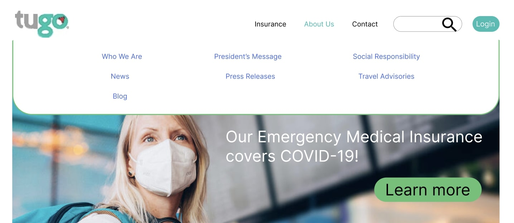

I wanted to know that the re-design was working as we planned:

Page: new designed top menu navbar
Success ratio: 50%
Average satisfaction rating: 3.5 / 5 stars
Comments:
"the navigation seems to disappear when the mouse moves away from the
"About" button. This needs to be corrected."
Page: redesigned Contact Us page
Success ratio: 95%
Average satisfaction rating: 4.5 / 5 stars
Comments:
"everything is very straight forward"
Page: new Claims page
Success ratio: 95%
Average satisfaction rating: 4.5 / 5 stars
Comments:
"this has become a lot simpler and easier to carry out."